들어온 돈: 광고 수입과 광고 제거
게임 이름은 「전설의 대장간 후예」예요. 8월 17일에 나온 도트 게임이고, 개발자 한 명이 클로드와 함께 만들었어요. 영상은 첫 장면에서 총액부터 꺼내요. 숫자 아래 작은 글씨를 보면 광고 수입과 세금 포함 결제액을 더한 값이에요.
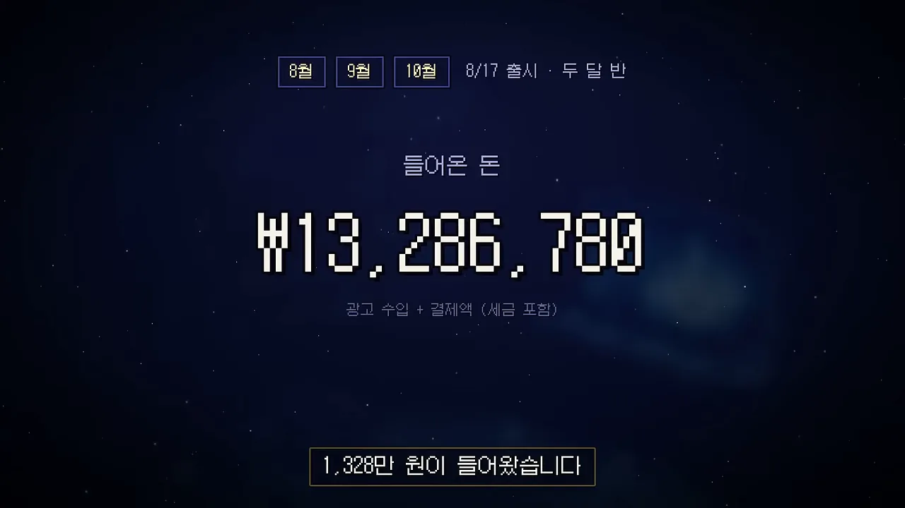
돈 버는 길은 두 가지뿐이에요. 위쪽 파란 칸이 보상형 광고, 아래쪽 노란 칸이 6,600원짜리 광고 제거예요. 화면 설명대로 전면 광고와 배너 광고는 없어요. 게임 화면 가운데에 있는 '광고: 부활' 버튼이 보상형 광고가 붙는 자리예요.
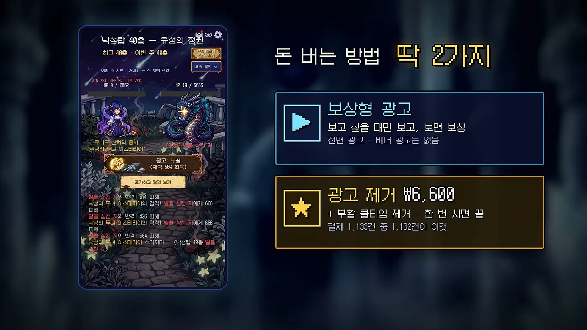
광고 수입은 구글 광고를 켠 다음 달에 뛰었어요
출시 첫 주 결제는 딱 2건이었어요. 개발자는 망한 줄 알았다고 해요. 8월 24일부터 구글 광고를 켰고, 막대그래프의 9월 칸이 그 결과예요. 8월 35.90달러이던 AdMob 수입이 9월에 3,294.99달러가 됐어요. 10월은 28일까지 합쳐 1,097.41달러예요.
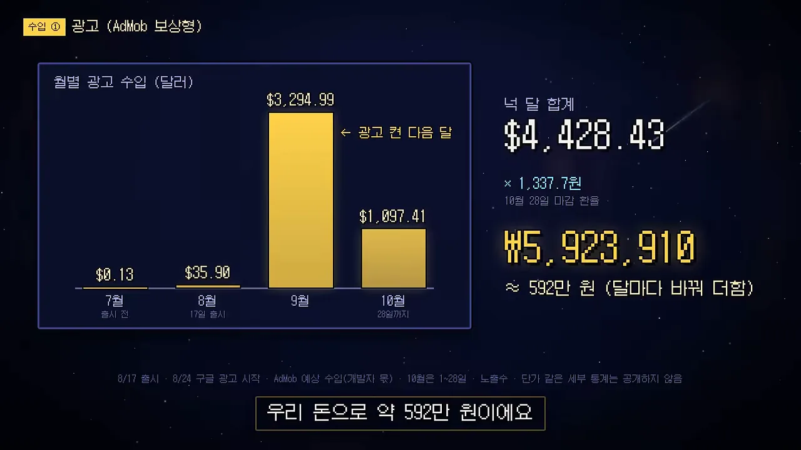
광고 제거 736만 원 중 손에 오는 돈은 569만 원이에요
인앱 결제로 파는 광고 제거는 환불 18건을 포함해 1,132건이 나갔어요. 설치 기기 100대 중 9대꼴이라고 해요. 오른쪽 폭포 그래프가 돈이 줄어드는 순서를 보여 줘요. 결제액 7,362,870원에서 부가세 669,352원과 구글 수수료 1,004,028원을 빼면 5,689,490원이 남아요.
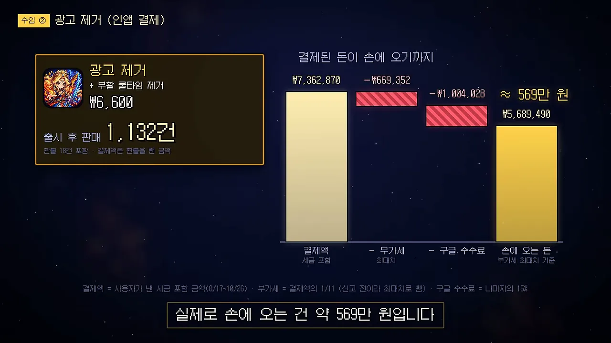
나간 돈: 광고비와 AI 도구
가장 큰 지출은 구글 광고비 594만 원이에요
세 칸을 왼쪽부터 보면 광고비 5,936,900원, 설치 12,701건, 설치 1건 단가 428원이에요. 왼쪽 칸은 부가세를 포함한 금액이고, 단가는 부가세를 뺀 비용으로 나눈 값이에요. 그래서 594만 원을 12,701로 나눈 값과는 조금 달라요.
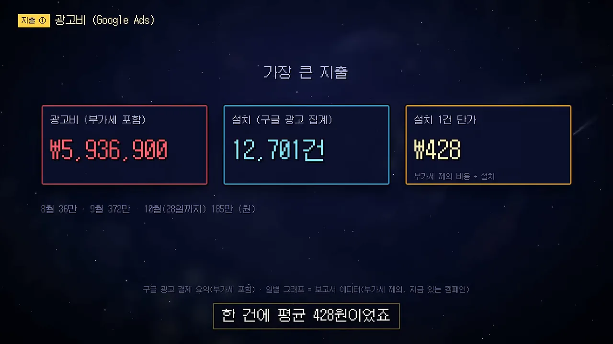
광고비를 77% 올려도 설치는 10% 늘었어요
노란 막대가 하루 광고비, 파란 선이 하루 설치예요. 표시된 두 구간을 비교하면 막대는 9/8~14에 훌쩍 높아지는데 파란 선은 거의 그대로예요. 위쪽 상자가 그 차이를 숫자로 보여 줘요. 300원이 안 되던 단가가 453원이 됐어요.
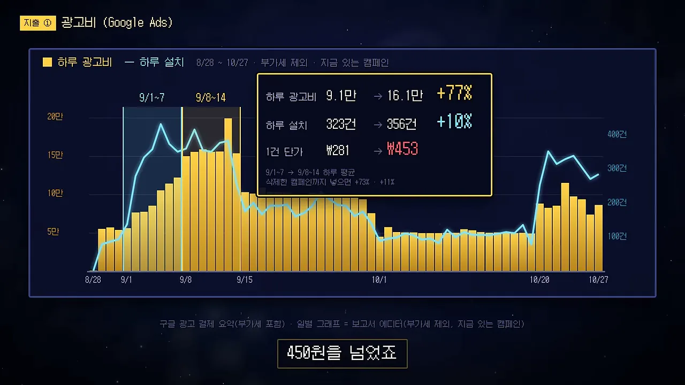
그 뒤 개발자는 하루 10만 원 선으로 광고비를 내렸어요. 위쪽 상자가 그 구간의 값이에요. 하루 9.9만 원을 썼는데 단가는 오히려 539원으로 올랐어요.
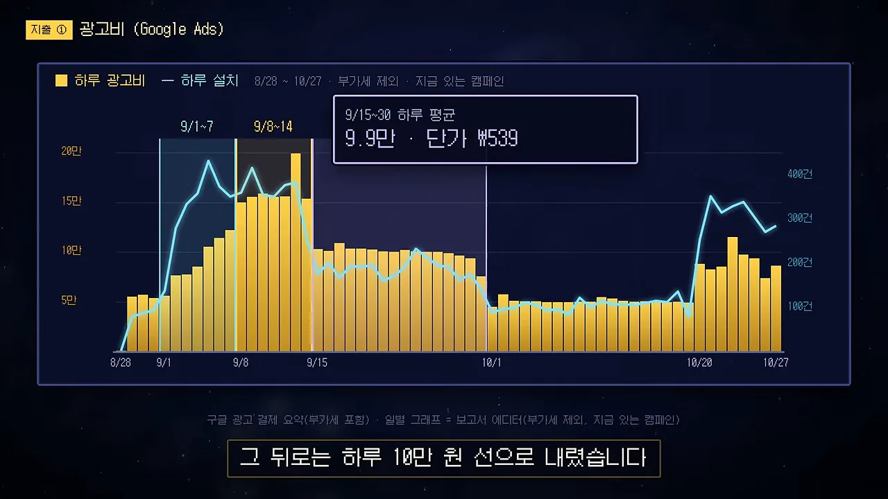
10월 하순에 대만과 일본 광고를 켜자 비로소 파란 선이 위로 튀어요. 영상 화면의 구간별 숫자를 한 표로 모으면 이렇게 돼요.
| 구간 | 하루 광고비 | 하루 설치 | 설치 1건 단가 |
|---|---|---|---|
| 9/1~7 | 9.1만 원 | 323건 | 281원 |
| 9/8~14 | 16.1만 원 | 356건 | 453원 |
| 9/15~30 | 9.9만 원 | 화면에 없음 | 539원 |
| 10/1~19 | 화면에 없음 | 103건 | 487원 |
| 대만·일본 광고 켠 뒤 | 화면에 없음 | 305건 | 295원 |
아래 화면의 초록 구간이 표의 마지막 줄이에요. 왼쪽 위 상자에 설치가 103건에서 305건으로, 단가가 487원에서 295원으로 바뀐 값이 적혀 있어요.
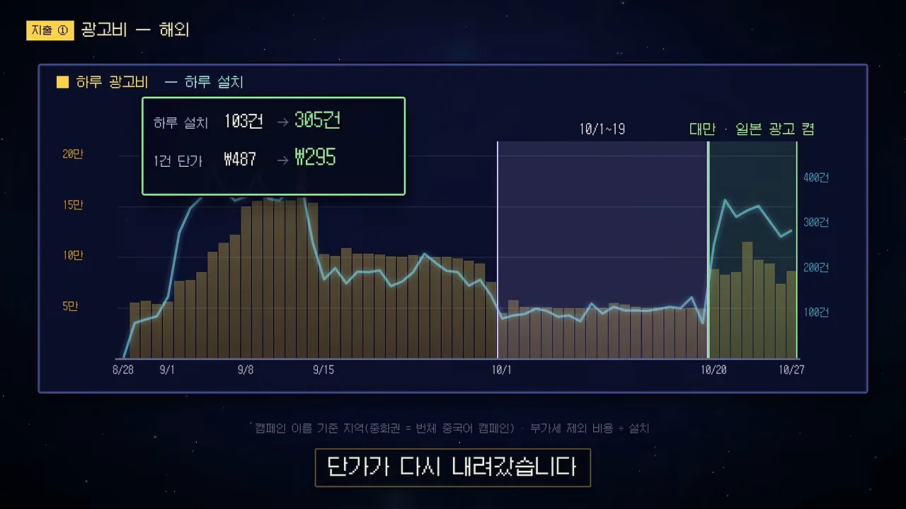
이유는 지역별 단가에서 보여요. 초록 막대 두 개가 해외, 노란 막대가 한국이에요. 오른쪽 상자에 중화권 단가가 한국의 51%라고 적혀 있어요.
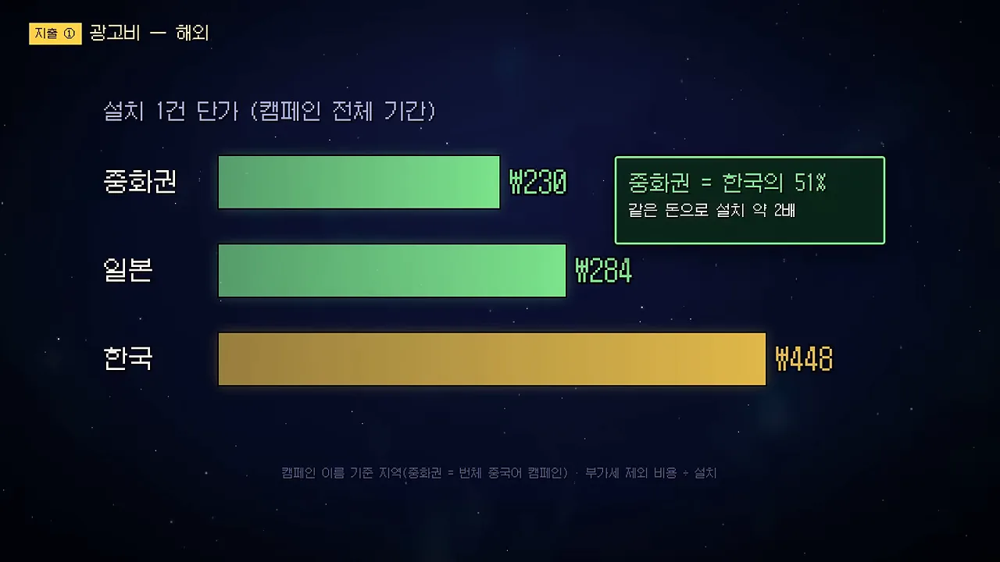
AI 도구값은 361만 원이에요
왼쪽이 클로드 청구 내역, 오른쪽이 이미지와 영상을 만드는 힉스필드예요. 클로드는 6월 Pro 22달러로 시작해 7월 25일에 Max로 올렸고, 지금은 월 220달러를 내요. 힉스필드는 Ultra 요금제 1년 치 1,800달러를 10월 3일에 한 번에 냈어요.
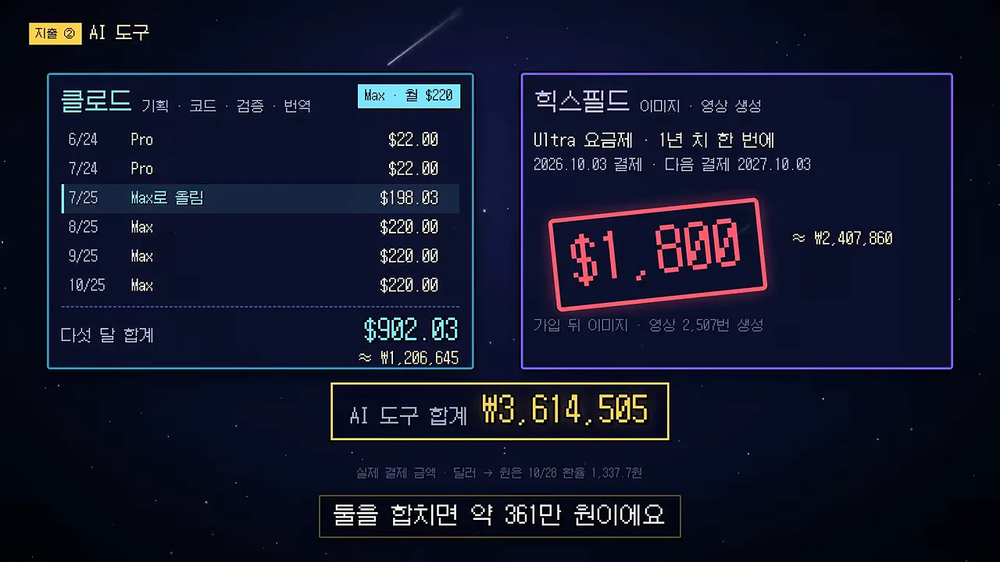
월 220달러로 클로드가 한 일
맨 위 파란 칩 네 개가 클로드가 맡은 일이에요. 기획, 코드, 검증, 번역이죠. 왼쪽 칸은 함께 쓴 코드 27,376줄과 빌드 번호 86번, 오른쪽은 한국어, 영어, 일본어, 번체 중국어 네 가지 게임 화면이에요.
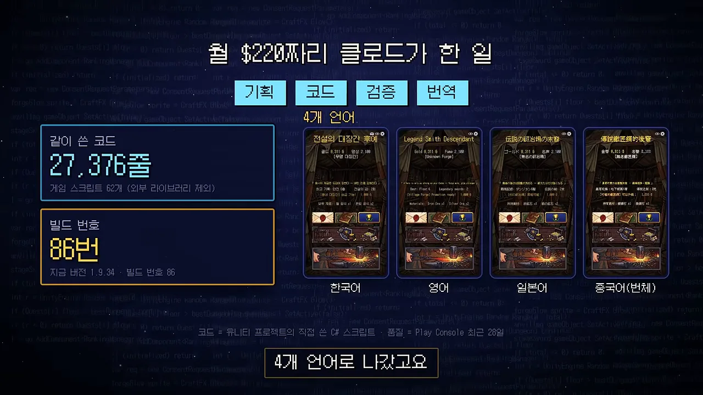
품질 숫자는 다음 화면에 나와요. 초록 칸이 비정상 종료율 0.06%, 그 아래 작은 글씨가 ANR(Application Not Responding) 0.01%, 노란 칸이 평점 4.66이에요.
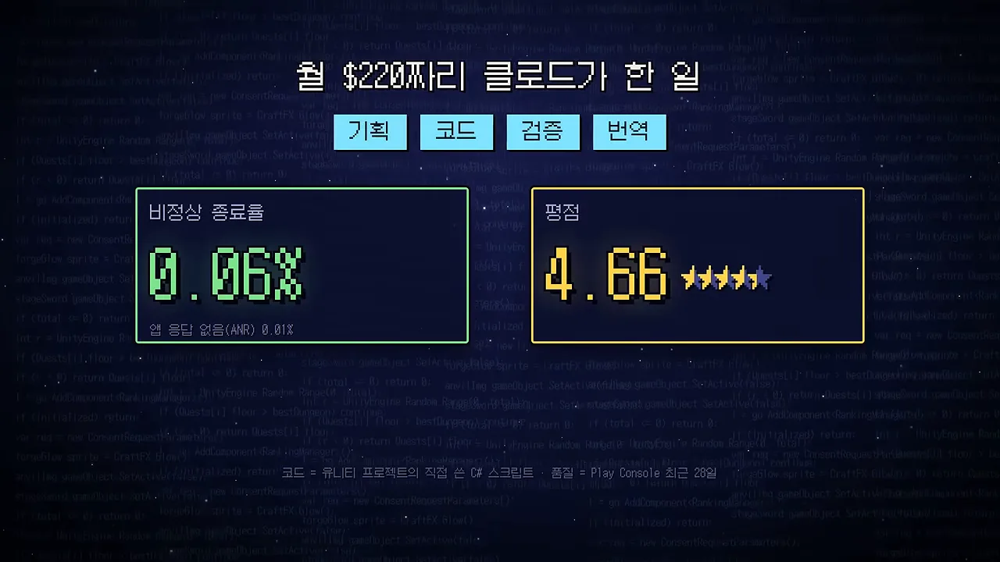
달마다 본 손익과 배운 점
초록 막대 하나와 빨간 막대 넷이 달별 손익, 파란 점선이 누적이에요. 6월부터 8월까지는 계속 적자예요. 광고를 켠 다음 달인 9월에 488만 원이 남아 처음으로 플러스가 됐어요. 10월 빨간 막대 아래 상자가 이 그래프의 포인트예요.
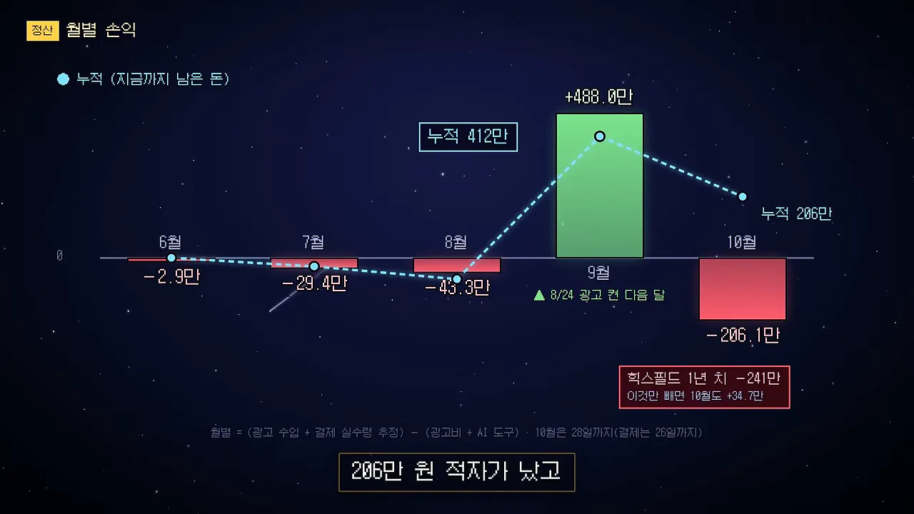
영상은 전체 장부를 영수증 한 장으로 정리해요. 초록 두 줄이 들어온 돈, 빨간 네 줄이 나간 돈이고, 맨 아래가 남은 돈 2,061,995원이에요. 도장에 찍힌 '흑자'도 이 한 줄을 가리켜요.
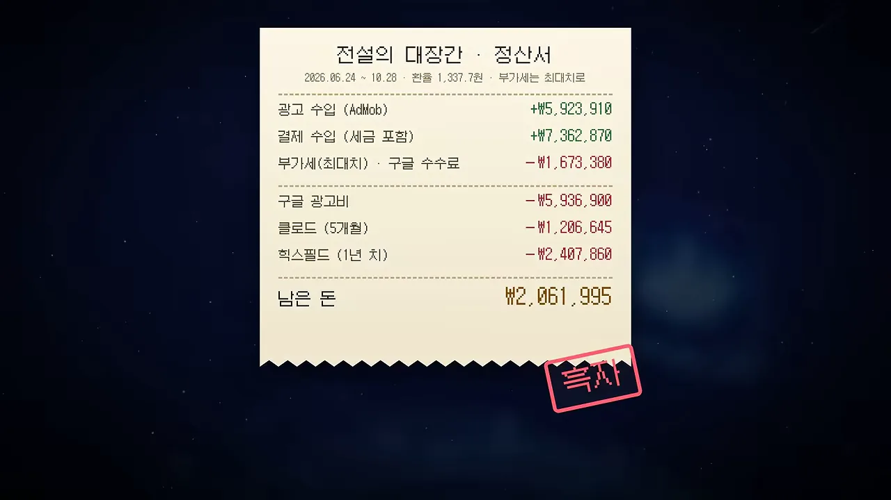
영수증의 숫자를 같은 비율로 그리면 어디서 많이 나갔는지 바로 보여요. 광고비 칸이 AI 도구 두 칸을 합친 것보다 크고, 남은 돈은 힉스필드 한 칸보다 작아요.
숫자는 클로드가 브라우저로 모았어요
창 다섯 개가 클로드가 읽은 곳이에요. AdMob, Play Console, Google Ads, claude.ai, higgsfield.ai죠. 아래 노란 줄의 식이 검산이에요. 들어온 돈에서 부가세·수수료 1,673,380원과 광고비·AI 도구 9,551,405원을 빼면 2,061,995원이 나와요.
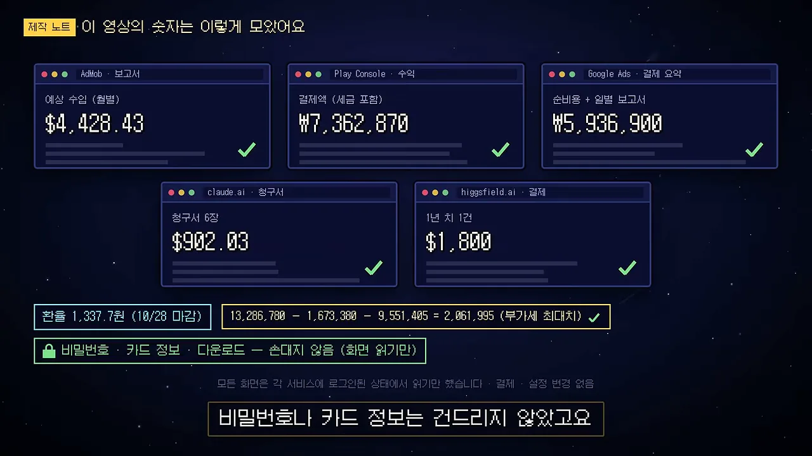
영상 자체도 코드로 만들었어요. 왼쪽 창은 Remotion 장면 파일 R8.tsx이고, 오른쪽 창은 ElevenLabs 목소리예요. 왼쪽 코드의 주석을 보면 도장 효과음이 내레이션의 '이백육만' 단어 시각에 맞춰져 있어요.
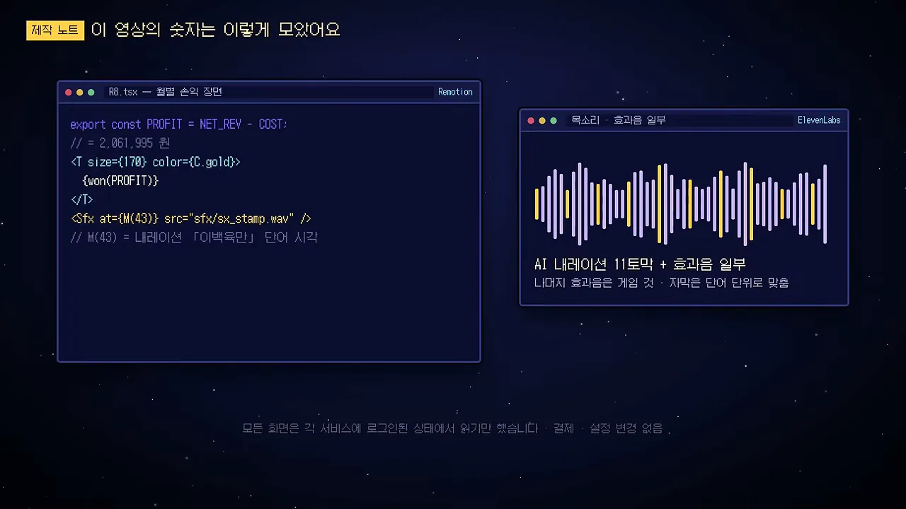
배운 점 세 가지
영상은 칸 세 개로 마무리해요. 칸마다 아래 작은 글씨에 근거 숫자가 있어요. 첫째 칸은 앞서 본 9월 둘째 주예요. 둘째 칸의 55%는 결제액 기준, 49%는 세금과 수수료를 뗀 실수령 기준이에요. 셋째 칸의 38%는 지출 9,551,405원 중 AI 도구 3,614,505원이 차지하는 비율이에요.
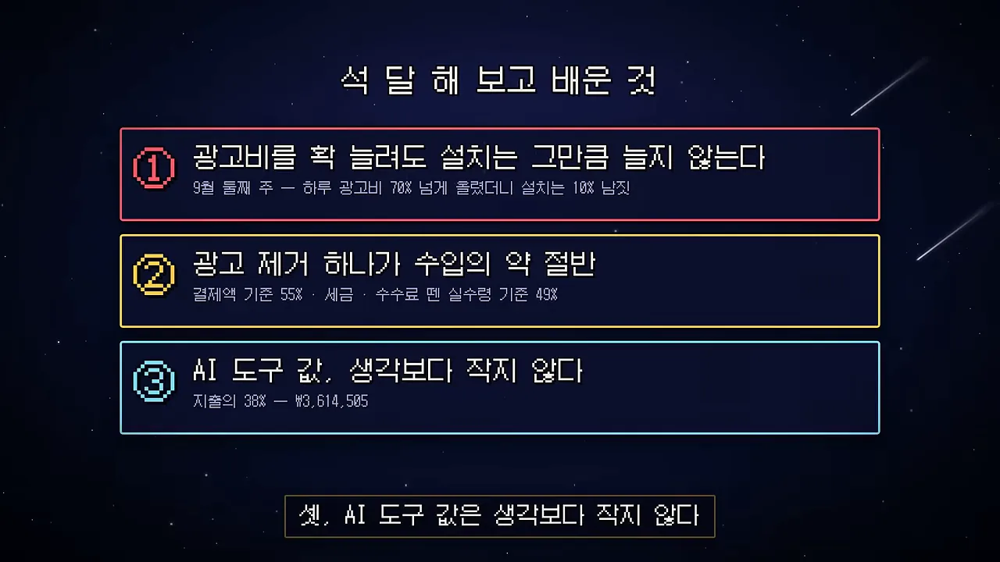